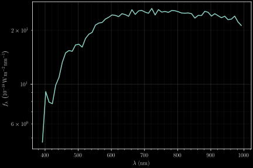

Mapping Milky Way Dust with Gaia XP Spectra
KIPAC@20, Stanford/SLAC, 12 September 2023
Gregory M. Green, Xiangyu Zhang (张翔宇)
(Max Planck Institute for Astronomy, Heidelberg)

Interstellar Dust in the Milky Way
“Bayestar19”
Created using optical-NIR photometry and parallaxes.
Rest of talk: mapping dust with Gaia BP/RP spectra ...
Collaborators
Xiangyu Zhang (张翔宇)
Hans-Walter Rix
Gaia BP/RP spectrophotometry
(“XP spectra”)
- $R \sim 50-160$
- slitless spectroscopy
- optical (330—1050 nm)
- 220 million stars (in DR3)

Example XP spectra
Example XP spectra

Example XP spectra

Comparison with LAMOST
- 20× as many stars
- 1/20th the resolution
- Flux-calibrated
- All-sky, uniform selection function
How to extract astrophysical information from these spectra?

How to extract astrophysical information from these spectra?

How to extract astrophysical information from these spectra?

How to extract astrophysical information from these spectra?
- Cross-match with higher-resolution spectra.
- Learn how to map from stellar type to BP/RP flux: $f_{\lambda} \left(\lambda\right)$.
- Use this model to infer stellar types, distances, extinctions.
(Include NIR photometry from 2MASS & WISE)
Gaia-LAMOST crossmatch

2.6 million matches.
Bootstrap the 1% of BP/RP stars with LAMOST matches to determine types of the other 99%.
Forward model
$$ \require{color} \definecolor{star}{RGB}{99,151,202} \definecolor{model}{RGB}{255,85,85} f_{\lambda}\left(\lambda,{\color{star}\Theta,\varpi,E}\right) = {\color{gray} \underbrace{ \color{white} F_{\lambda}\left(\lambda,{\color{star}\Theta};{\color{model}W}\right) }_{\mathrm{neural\ network}} } {\color{star}\varpi^2} e^{-{\color{star}E} {\color{model}R}\left(\lambda\right)} $$
Stellar parameters:
- $\Theta =$ type (LAMOST)
- $\varpi =$ parallax (Gaia)
- $E =$ extinction (Bayestar19)
Model parameters:
- $W =$ neural net weights
- $R =$ extinction curve
Model structure
Model vs. Observations

Training the model
Update model, holding stellar parameters fixed.
Update stellar parameters, holding model fixed.
Converge on optimal model and stellar parameters.
Implemented in auto-differentiable framework (TensorFlow). ⇒ gradient descent.
Learned stellar models of Gaia XP spectra


Learned extinction curve

Gaia XP reddenings
Zhang, Green & Rix (2023)
Clean distances and reddenings
(of ~100 million stars)
Data is available online
Full dataset on Zenodo.
Also available “on TAP” using ADQL.
Query distances and reddenings of stars along one sightline:
SELECT
source_id,
ra, dec,
ext, err_ext,
mod_parallax,
err_mod_parallax,
quality_flags,
teff_confidence,
chi2_opt
FROM xpparams.main
WHERE
quality_flags < 16
AND teff_confidence > 0.5
AND chi2_opt/61 < 5
AND mod_parallax / err_mod_parallax > 8
AND distance(ra, dec, 86.3362, -1.5407) < 0.5
(Data available through the German Astrophysical Virtual Observatory)
Extinction along individual sightlines


Extinction in 3D
All-sky results from binning and averaging stars


Bird's-eye view of the Galactic plane
Extinction curve variation
Flux residuals (model - observed)

Update model: extinction curve variation
Update model: extinction curve variation

Old model
$$ \vec{A} = {\color{#6397caff}E} \, \exp\left( {\color{#ff5555} \ln\vec{R}} \right) $$
New model
$$ \vec{A} = {\color{#6397caff}E} \, \exp\left( {\color{#ff5555} \ln\vec{R}_0} + {\color{#6397caff}\xi} \,{\color{#ff5555} \Delta\ln\vec{R}} \right) $$
$\color{#6397caff}\xi$ plays the role of $R(V)$.
Key: $$ {\color{#6397caff} \mathrm{stellar\ parameters}} \\ {\color{#ff5555} \mathrm{model\ parameters}} $$
Train the new model ...
Learned model of extinction curve

Infer $\xi$ for every star ...

Plenty of work to do to explain these variations.
A few ideas:
- Interstellar radiation field
- Molecular gas
- Star-forming regions
- ...